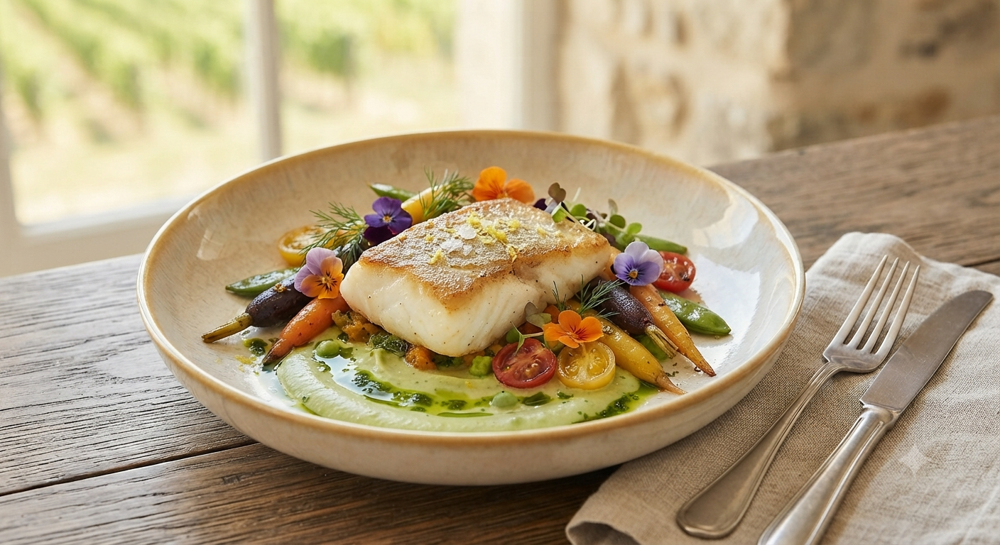
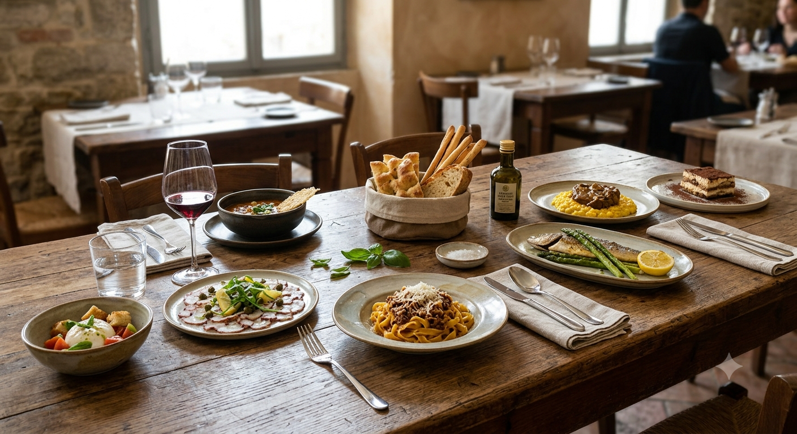

山形県立図書館「遊学館」の中に佇む IL BLU(イルブル)。
私たちは、ただのレストランではありません。
地元農家から届く新鮮な野菜、豊富な食材、
そして職人が毎朝焼き上げる香り高いパン。
それら全ての物語を、一つのコースに仕立ててお届けします。
旬の厳選食材
Seasonal Ingredients
安らぎの空間
Healing Space
「鯛は少し寝かせて味が出て食べ頃。パスタは鶏オイルの味と香りがとても良く、季節毎に通いたくなるお店です。」
— 平日ランチご利用 T様「図書館ついでだから、本を片手に一人でパスタを堪能できる貴重なお店。野菜の鮮度が抜群で、素材への愛を感じます。」
— 週末一人ランチご利用 S様
IL BLUの味をより身近に、そして日常のさまざまなシーンでお楽しみいただけるよう、
新しいサービスや仕掛けを準備・検討しています。
ご好評をいただいている焼き立てモチモチパンを、店頭で気軽にお買い求めいただけるテイクアウトコーナー。朝食や毎日の食卓に特別な彩りを。
庄内浜直送の魚介カルパッチョや旬野菜のデリをご自宅で。おうちディナーやホームパーティー、特別な日のワインのお供に最適です。
季節ごとの新作料理や、お土産パンの焙き上がり時間など、
IL BLUの今をLINEでお届けします。